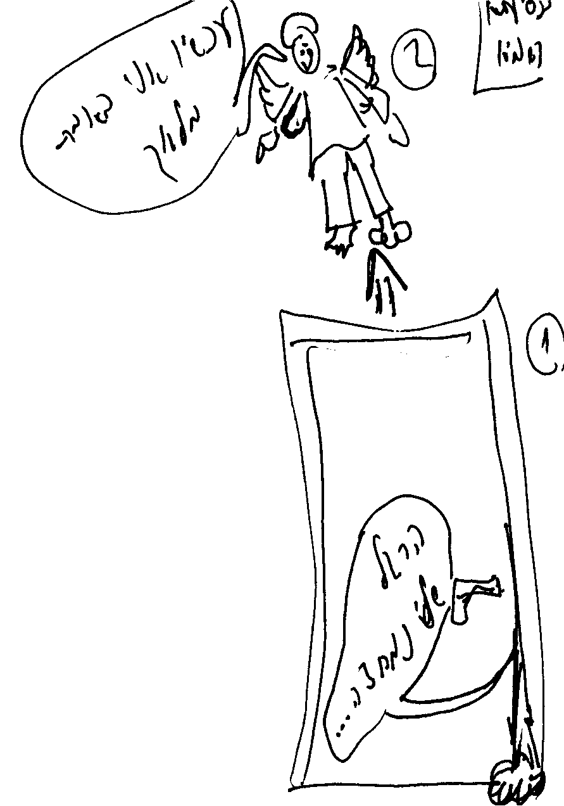
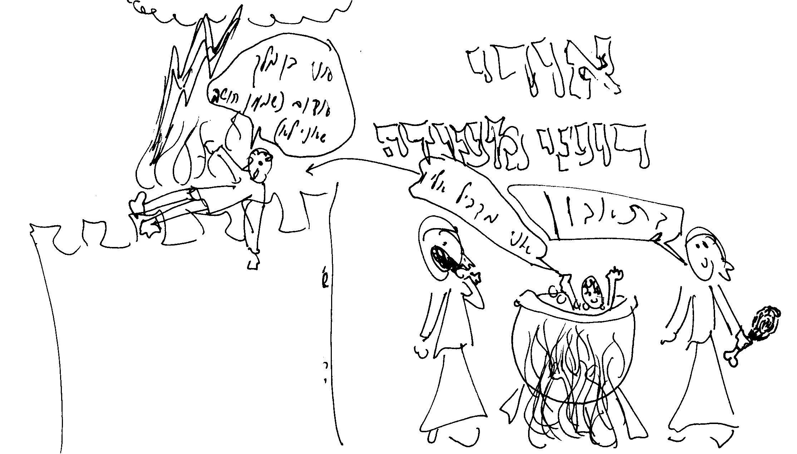

קוד: המצור על מואב והמצור על שומרון בתנ"ך
סוג: השלמה2
מאת: סיגל, אורי פרץ
אל: שיעור נח"ת ס'
/ סיגליה הלברשטם; התשובות לשאלות עדיין לא הגיעו למערכת
[מל"ב ג ו]
מל"ב ו'/כד-לג
-למה יש מצור ורעב? (בד"כ בספר מלכים בנוי כחטא ועונש)
-מה מטרת סיפור הנשים? אם המטרה היא רק כדי להראות את רמת הרעב, הרי מסופר לנו עוד קודם, "עד היות ראש-חמור..". (אפשרית הסיבה שהמטרה היא כדי להראות את יחס המלך לרעב ולעם.)
מל"ב ג'
-מה עושה מלך מואב? של מי הבן, של מלך מואב או של מלך אדום?
-למה יש קצף על ישראל? מה הקשר? (הרי קודם ה' עשה ישועה גדולה לעמ"י)
ע"פ מה ששמעתי מהילה עמיצור, אפשר לראות שמלך ישראל- יהורם מאוד גאוותן. הוא לא מבקש מאלישע, למרות שהוא עומד למות- הוא רק מתלונן, לא אומר תודה- לא מתיחס אליו בכלל. אפשר לומר שאלך למלחמה בריבוי מיותר של מקנה (אולי בגלל גאוותו, שמו לא מוזכר יותר בפרקים הבאים.)
אלישע אומר להם להשחית את ערי מואב, דבר המנוגד לדברי תורה. זו כנראה הוראת-שעה. עמ"י עושה מה שאומרים לו- והרבה יותר:
פס' כד' "ויכו … ויכו בה והכות … " -פס' כה' "עד השאיר אבניה … וישובו הקלעים ויכוה" (אפילו כשנשארו קצת אבנים- הרסו אותם).
הרמב"ם בהלכות מלכים אומר שכשצרים על עיר, צריך לצור עליה מ3- כיוונים בלבד, ולתת לנצורים אפשרות לברוח (כמו אצל גדעון), כדי שלא ילחמו במוטיבציית יתר שמביא היאוש. כאן הם לא נלחמו כך- הם צרו על מלך מואב (על עירו או ביתו). הוא ניסה להבקיע לכיוון מלך אדום (למלחמה או שלום) ולא הצליח- ולכן הקריב את הבן, מתוך יאוש. לכן היה קצף על ישראל על שנהגו בגאוה ועשו "אני קצפתי מאט והמה עזרו לרעה" (זכריה א/טו).
אני חושבת שהעונש על מעשה זה היה המצור והרעב בפרקים ו-ז.
המצור על שומרון כנגד המצור על עיר מלך מואב- והסיפור על הבנים- כנגד "בנו הבכור אשר ימלוך תחתיו" המחלוקת על איזה בן … (ע"פ עמוס ב/א הפרשנים טוענים שזה הבן של מלך אדום שהיה אצל מלך מואב, ולכן הוא הצטרף למלחמה)
ישנה עוד השוואה-
ג/כג- המואבים ישר קופצים למסקנות וב- ז/יב להפך.(אבל אני לא יודעת מה המשמעות של זה).
שאלות-
-למה האריכו את המסע למואב דרך אדום? למה הלכו 7 ימים? מי הציע ללכת דרך אדום?
-כיצד יתכן שיש מלך לאדום, והרי מלך אין באדום ניצב מלך? למה יהושפט לא מוזכר כמלך?
-"ויהי בבוקר כעלות המנחה". יש מנחה בבוקר? האם זה כפרוש המפרש- "ויהי בבוקר", אלישע דיבר. "כעלות המנחה", נעשה הנס?
-מה משמעות ההקדמה "ויהי כמות אחאב.. ויצא.. ביום ההוא משומרון ויפקוד את-כל-ישראל.. מלך מואב פשע בי.."?
-למה מלך מואב רצה להבקיע למלך אדום דווקא?
-מדוע אלישע מתואר כאילו הוא נמצא במקום מרוחק כ"כ, כאילו הרעב לא נוגע לו?
-למה המלך מאשים את אלישע? בגלל שלא הרשה לו להרוג את גדודי ארם? בגלל שלא מתפלל? בגלל שידע שיהיה רעב (ח/א), ולכן הוא אשם בו?
-מי שלח איש מלפניו, מה היתה מטרתו? (המלך שלח, בלי סיבה. אלישע שלח, כדי ש"והוא אמר אל הזקנים". פסוקית זמן.)
-מדוע לא מלחצו את המלאך? למה רצו למחוץ אותו? מה פרוש "קול אדוניו אחריו"? למה הוא משמש סיבה?
-מי אומר "הנה הרעה … ."? מה הפרוש? (אלישע, המלאך, המלך, האיש)
בעקבות השיעור, צייר אורי פרץ ממושב בית-גמליאל כמה ציורים שממחישים חלק מהרעיונות בשיעור. לפרטים נוספים נא לפנות אליו...
|  | מל"ב ו 32: "ואלישע יושב בביתו, והזקנים יושבים איתו; וישלח איש מלפניו, בטרם יבוא המלאך אליו והוא אמר אל הזקנים: 'הראיתם כי שלח בן המרצח הזה להסיר את ראשי, ראו כבוא המלאך סגרו הדלת ולחצתם אותו בדלת, הלא קול רגלי אדוניו אחריו.'." |
|  | |
|
מל"ב ו 25: "
|
מל"ב ג 27: "וייקח את בנו הבכור אשר ימלוך תחתיו, ויעלהו עולה על החומה, ויהי קצף גדול על ישראל; ויסעו מעליו, וישובו לארץ." |